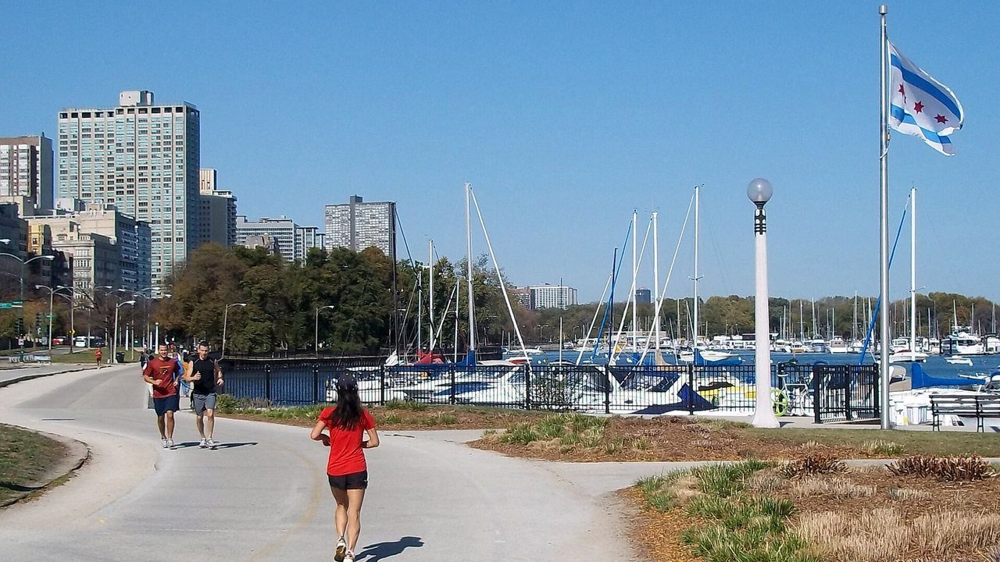

Race, Chicago Lakefront Trail

Behind
Best +0:01
371W
Target 418 W-47 W
- Cadence
- 87rpm
- Heart
- 140bpm
- Speed
- 26.5km/h
Work4 of 16
0:39
Next: · 1:00 at level 13
+0.1%
1 m climbed
1.78 km
21
Resistance / 32
Solo races your best-time ghost: position reads Ahead or Behind, and solo alone gets a Pause button. Frozen at 4:21.